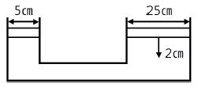
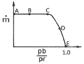
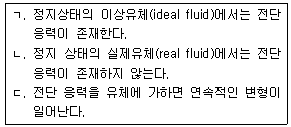
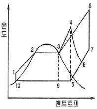
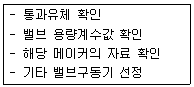

가스기사 (2017-03-05 기출문제)
1과목: 가스유체역학
1. 탱크 안의 액체의 비중량은 700㎏f/m3이며 압력은 3㎏f/cm2이다. 압력을 수두로 나타내면 몇 m인가?
- 0.429m
- 4.286m
- 42.86m
- 428.6m
(정답률: 71%)

2. 2개의 무한 수평 평판 사이에서의 층류 유동의 속도 분포가 u(y)＝U[1-(y/H)2]로 주어지는 유동장(Poiseuille flow)이 있다. 여기에서 U와 H는 각각 유동장의 특성속도와 특성길이를 나타내며, y는 수직 방향의 위치를 나타내는 좌표이다. 유동장에서는 속도 u(y)만 있고, 유체는 점성계수가 μ인 뉴톤유체일 때 y＝H/2에서의 전단응력의 크기는?
- μU/H2
- μU/2H2
- μU/H
- 8μU/2H
(정답률: 65%)
3. 어떤 유체의 액면 아래 10m인 지점의 계기압력이 2.16㎏f/cm2일 때 이 액체의 비중량은 몇 ㎏f/m3인가?
- 2160
- 216
- 21.6
- 0.216
(정답률: 68%)
4. Mach 수를 의미하는 것은?
- 실제유동속도/음속
- 초음속/아음속
- 음속/실제유동속도
- 아음속/초음속
(정답률: 84%)
5. 간격이 좁은 2개의 연직 평판을 물속에 세웠을 때 모세관 현상의 관계식으로 맞는 것은? (단, 두 개의 연직 평판의 간격 : t, 표면장력 : σ, 접촉각 : β, 물의 비중량 : γ, 평판의 길이 : l, 액면의 상승높이 : hc이다.)
- hc＝4σcosβ/(γt)
- hc＝4σsinβ/(γt)
- hc＝2σcosβ/(γt)
- hc＝2σsinβ/(γt)
(정답률: 60%)
6. 지름이 25㎝인 원형관 속을 5.7m/s의 평균속도로 물이 흐르고 있다. 40m에 걸친 수두 손실이 5m라면 이때의 Darcy 마찰계수는?
- 0.0189
- 0.1547
- 0.2089
- 0.2621
(정답률: 67%)
7. 두 피스톤의 지름이 각각 25㎝와 5㎝이다. 직경이 큰 피스톤을 2㎝움직이면 작은 피스톤은 몇 ㎝ 움직이는가? (단, 누설량과 압축은 무시한다.)

- 5
- 10
- 25
- 50
(정답률: 60%)
8. 중력 단위계에서 1㎏f와 같은 것은?
- 980㎏·m/s2
- 980㎏·m2/s2
- 9.8㎏·m/s2
- 9.8㎏·m2/s2
(정답률: 85%)
9. 내경이 10㎝인 원관 속을 비중 0.85인 액체가 10㎝/s의 속도로 흐른다. 액체의 점도가 5cP라면 이 유동의 레이놀즈수는?
- 1400
- 1700
- 2100
- 2300
(정답률: 73%)
10. 출구의 지름이 20㎝인 송풍기의 배출유량이 3m3/min일 때 평균유속은 약 몇 m/s인가?
- 1.2m/s
- 1.6m/s
- 3.2m/s
- 4.8m/s
(정답률: 77%)
11. 항력계수를 옳게 나타낸 식은? (단, CD는 항력계수, D는 항력, ρ는 밀도, V는 유속, A는 면적을 나타낸다.)
- CD＝D/(0ρ.5V2A)
- CD＝D2/(0ρ.5VA)
- CD＝(0.5ρV2A)/D
- CD＝(0.5ρV2A)/D2
(정답률: 54%)
12. 구형입자가 유체 속으로 자유낙하할 때의 현상으로 틀린 것은? (단, μ는 점성계수, d는 구의 지름, U는 속도이다.)
- 속도가 매우 느릴 때 항력(drag force)은 3πμdU이다.
- 입자에 작용하는 힘을 중력, 항력, 부력으로 구분할 수 있다.
- 항력계수(CD)는 레이놀즈수가 증가할수록 커진다.
- 종말속도는 가속도가 감소되어 일정한 속도에 도달한 것이다.
(정답률: 77%)
13. 안지름이 150㎜인 관 속에 20℃의 물이 4m/s로 흐른다. 안지름이 75㎜ 이 관속에 40℃의 암모니아가 흐르는 경우 역학적 상사를 이루려면 암모니아의 유속은 얼마가 되어야 하는가? (단, 물의 동점성계수는 1.006×10-6m2/s이고 암모니아의 동점성계수는 0.34×10-6m2/s이다.)
- 0.27m/s
- 2.7m/s
- 3m/s
- 5.68 m/s
(정답률: 56%)
14. 2차원 직각좌표계(x, y)상에서 x방향의 속도를 u, y방향의 속도를 v라고 한다. 어떤 이상유체의 2차원 정상 유동에서 v＝-Ay일 때 다음 중 x방향의 속도 u가 될 수 있는 것은? (단, A는 상수이고 A＞0이다.)
- Ax
- -Ax
- Ay
- -2Ax
(정답률: 62%)
15. 압축성 유체가 축소-확대 노즐의 확대부에서 초음속으로 흐를 때, 다음 중 확대부에서 감소하는 것을 옳게 나타낸 것은? (단, 이상기체의 등엔트로피 흐름이라고 가정한다.)
- 속도, 온도
- 속도, 밀도
- 압력, 속도
- 압력, 밀도
(정답률: 82%)
16. 상온의 공기 속을 260m/s의 속도로 비행하고 있는 비행체의 선단에서의 온도증가는 약 얼마인가? (단, 기체의 흐름을 등 엔트로피 흐름으로 간주하고 공기의 기체상수는 287J/㎏·K이고 비열비는 1.4이다.)
- 24.5℃
- 33.6℃
- 44.6℃
- 45.1℃
(정답률: 43%)
17. 수은-물 마노메타로 압력차를 측정하였더니 50㎝Hg 였다. 이 압력차를 mH2O로 표시하면 약 얼마인가?
- 0.5
- 5.0
- 6.8
- 7.3
(정답률: 62%)
18. 그림은 수축노즐을 갖는 고압용기에서 기체가 분출될 때 질량유량(m)과 배압(Pb)과 용기내부 압력(Pr)의 비의 관계를 도시한 것이다. 다음 중 질식된(choking) 상태만 모은 것은?

- A, E
- B, D
- D, E
- A, B
(정답률: 71%)
19. 유체에 관한 다음 설명 중 옳은 내용을 모두 선택한 것은?

- ㄱ, ㄴ
- ㄱ, ㄷ
- ㄴ, ㄷ
- ㄱ, ㄴ, ㄷ
(정답률: 53%)
20. 웨버(Weber)수의 물리적 의미는?
- 압축력/관성력
- 관성력/점성력
- 관성력/탄성력
- 관성력/표면장력
(정답률: 77%)
2과목: 연소공학
21. 연소범위에 대한 일반적인 설명으로 틀린 것은?
- 압력이 높아지면 연소범위는 넓어진다.
- 온도가 올라가면 연소범위는 넓어진다.
- 산소농도가 증가하면 연소범위는 넓어진다.
- 불활성가스의 양이 증가하면 연소범위는 넓어진다.
(정답률: 85%)
22. 아세틸렌(C2H2)에 대한 설명 중 틀린 것은?
- 산소와 혼합하여 3300℃까지의 고온을 얻을 수 있으므로 용접에 사용된다.
- 가연성 가스 중 폭발한계가 가장 적은 가스이다.
- 열이나 충격에 의해 분해폭발이 일어날 수 있다.
- 용기에 충전할 때에 단독으로 가압 충전할 수 없으며 용해 충전한다.
(정답률: 77%)
23. 미분탄 연소의 특징으로 틀린 것은?
- 가스화 속도가 낮다.
- 2상류 상태에서 연소한다.
- 완전연소에 시간과 거리가 필요하다.
- 화염이 연소실 전체에 퍼지지 않는다.
(정답률: 70%)
24. 방폭에 대한 설명으로 틀린 것은?
- 분진 처리시설에서 호흡을 하는 경우 분진을 제거하는 장치가 필요하다.
- 분해 폭발을 일으키는 가스에 비활성기체를 혼합하는 이유는 화염온도를 낮추고 화염전파능력을 소멸시키기 위함이다.
- 방폭대책은 크게 예방, 긴급대책 등 2가지로 나누어진다.
- 분진을 다루는 압력을 대기압보다 낮게하는 것도 분진 대책 중 하나이다.
(정답률: 78%)
25. 열역학적 상태량이 아닌 것은?
- 정압비열
- 압력
- 기체상수
- 엔트로피
(정답률: 58%)
26. 800℃의 고열원과 300℃의 저열원 사이에서 작동하는 카르노사이클 열기관의 열효율은?
- 31.3%
- 46.6%
- 68.8%
- 87.3%
(정답률: 68%)
27. 폭발억제 장치의 구성이 아닌 것은?
- 폭발검출기구
- 활성제
- 살포기구
- 제어기구
(정답률: 78%)
28. 다음 가스와 그 폭발한계가 틀린 것은?
- 수소 : 4%~75%
- 암모니아 : 15%~28%
- 메탄 : 5%~15.4%
- 프로판 : 2.5%~40%
(정답률: 72%)
29. 배기가스의 온도가 120℃인 굴뚝에서 통풍력 12㎜H2O를 얻기 위하여 필요한 굴뚝의 높이는 약 몇 m인가? (단, 대기의 온도는 20℃이다.)
- 24
- 32
- 39
- 47
(정답률: 35%)
30. 가연성 혼합가스에 불활성 가스를 주입하여 산소의 농도를 최소산소농도(MOC) 이하로 낮게하는 공정은?
- 릴리프(relief)
- 벤트(vent)
- 이너팅(inerting)
- 리프팅(lifting)
(정답률: 83%)
31. 공기비가 클 경우 연소에 미치는 영향에 대한 설명으로 틀린 것은?
- 통풍력이 강하여 배기가스에 의한 열손실이 많아진다.
- 연소가스 중 NOx의 양이 많아져 저온부식이 된다.
- 연소실 내의 연소온도가 저하한다.
- 불완전연소가 되어 매연이 많이 발생한다.
(정답률: 66%)
32. 다음은 간단한 수증기사이클을 나타낸 그림이다. 여기서 랭킨(Rankine)사이클의 경로를 옳게 나타낸 것은?

- 1 → 2 → 3 → 9 → 10 → 1
- 1 → 2 → 3 → 4 → 5 → 9 → 10 → 1
- 1 → 2 → 3 → 4 → 6 → 5 → 9 → 10 → 1
- 1 → 2 → 3 → 8 → 7 → 5 → 9 → 10 → 1
(정답률: 76%)
33. 연소의 열역학에서 몰엔탈피를 Hj, 몰엔트로피를 Sj라 할 때, Gibbs 자유에너지 Fj와의 관계를 올바르게 나타낸 것은?
- Fj＝Hj - TSj
- Fj＝Hj＋TSj
- Fj＝Sj - THj
- Fj＝Sj＋THj
(정답률: 50%)
34. 천연가스의 비중측정 방법은?
- 분젤실링법
- Soap bubble 법
- 라이트법
- 분젠버너법
(정답률: 60%)
35. 공기 중의 산소 농도가 높아질 때 연소의 변화에 대한 설명으로 틀린 것은?
- 연소속도가 빨라진다.
- 화염온도가 높아진다.
- 발화온도가 높아진다.
- 폭발이 더 잘 일어난다.
(정답률: 78%)
36. 증기운 폭발의 특징에 대한 설명으로 틀린 것은?
- 폭발보다 화재가 많다.
- 점화위치가 방출점에서 가까울수록 폭발위력이 크다.
- 증기운의 크기가 클수록 점화될 가능성이 커진다.
- 연소에너지의 약 20%만 폭풍파로 변한다.
(정답률: 64%)
37. 연소 반응이 완료되지 않아 연소가스 중에 반응의 중간 생성물이 들어있는 현상을 무엇이라 하는가?
- 열해리
- 순반응
- 역화반응
- 연쇄분자반응
(정답률: 77%)
38. 화격자 연소방식 중 하입식 연소에 대한 설명으로 옳은 것은?
- 산화층에서는 코크스화한 석탄입자표면에 충분한 산소가 공급되어 표면연소에 의한 탄산가스가 발생한다.
- 코크스화한 석탄은 환원층에서 아래 산화층에서 발생한 탄산가스를 일산화탄소로 환원한다.
- 석탄층은 연소가스에 직접 접하지 않고 상부의 고온 산화층으로부터 전도와 복사에 의해 가열된다.
- 휘발분과 일산화탄소는 석탄층 위쪽에서 2차 공기와 혼합하여 기상연소한다.
(정답률: 54%)
39. 일정한 체적 하에서 포화증기의 압력을 높이면 무엇이 되는가?
- 포화액
- 과열증기
- 압축액
- 습증기
(정답률: 70%)
40. 프로판을 완전연소시키는데 필요한 이론공기량은 메탄의 몇 배인가? (단, 공기 중 산소의 비율은 21v%이다.)
- 1.5
- 2.0
- 2.5
- 3.0
(정답률: 71%)
3과목: 가스설비
41. 습식 아세틸렌 제조법 중 투입식의 특징이 아닌 것은?
- 온도상승이 느리다.
- 불순가스 발생이 적다.
- 대량 생산이 용이하다.
- 주수량의 가감으로 양을 조정할 수 있다.
(정답률: 54%)
42. 다음 배관 중 반드시 역류방지 밸브를 설치할 필요가 없는 곳은?
- 가연성 가스를 압축하는 압축기와 오토클레이브와의 사이
- 암모니아의 합성탑과 압축기 사이
- 가연성 가스를 압축하는 압축기와 충전용 주관과의 사이.
- 아세틸렌을 압축하는 압축기의 유분리기와 고압건조기와의 사이
(정답률: 59%)
43. 역카르노 사이클로 작동되는 냉동기가 20kW의 일을 받아서 저온체에서 20kcal/s의 열을 흡수한다면 고온체로 방출하는 열량은 약 몇 kcal/s인가?
- 14.8
- 24.8
- 34.8
- 44.8
(정답률: 57%)
44. 고압가스설비는 상용압력의 몇 배 이상의 압력에서 항복을 일으키지 않는 두께를 갖도록 설계해야 하는가?
- 2배
- 10배
- 20배
- 100배
(정답률: 77%)
45. 정상운전 중에 가연성가스의 점화원이 될 전기불꽃, 아크 또는 고온부분 등의 발생을 방지하기 위하여 기계적·전기적 구 조상 또는 온도상승에 대하여 안전도를 증가시킨 방폭구조는?
- 내압방폭구조
- 압력방폭구조
- 유입방폭구조
- 안전증방폭구조
(정답률: 78%)
46. 다음 중 동관(Copper pipe)의 용도로서 가장 거리가 먼 것은?
- 열교환기용 튜브
- 압력계 도입관
- 냉매가스용
- 배수관용
(정답률: 66%)
47. 공업용 수소의 가장 일반적인 제조방법은?
- 소금물 분해
- 물의 전기분해
- 황산과 아연 반응
- 천연가스, 석유, 석탄 등의 열분해
(정답률: 71%)
48. 1000rpm으로 회전하고 있는 펌프의 회전수를 2000rpm으로 하면 펌프의 양정과 소요동력은 각각 몇 배가 되는가?
- 4배, 16배
- 2배, 4배
- 4배, 2배
- 4배, 8배
(정답률: 75%)
49. 다음 [보기]의 안전밸브의 선정절차에서 가장 먼저 검토하여야 하는 것은?

- 기타 밸브구동기 선정
- 해당 메이커의 자료 확인
- 밸브 용량계수값 확인
- 통과유체 확인
(정답률: 81%)
50. 일반용 LPG 2단 감압식 1차용 압력조정기의 최대폐쇄압력으로 옳은 것은?
- 3.3kPa 이하
- 3.5kPa 이하
- 95kPa 이하
- 조정압력의 1.25배 이하
(정답률: 70%)
51. 화염에서 백-파이어(Back-fire)가 생기는 주된 원인은?
- 버너의 과열
- 가스의 과량공급
- 가스압력의 상승
- 1차 공기량의 감소
(정답률: 68%)
52. 고압가스 탱크의 수리를 위하여 내부가스를 배출하고 불활성가스로 치환하여 다시 공기로 치환하였다. 내부의 가스를 분석한 결과 탱크 안에서 용접작업을 해도 되는 경우는?
- 산소 20%
- 질소 85%
- 수소 5%
- 일산화탄소 4000ppm
(정답률: 81%)
53. 4극 3상 전동기를 펌프와 직결하여 운전할 때 전원주파수가 60Hz이면 펌프의 회전수는 몇 rpm인가? (단, 미끄럼율은 2%이다.)
- 1562
- 1663
- 1764
- 1865
(정답률: 50%)
54. 수소 가스를 충전하는데 가장 적합한 용기의 재료는?
- Cr강
- Cu
- Mo강
- Al
(정답률: 70%)
55. 정압기를 평가, 선정할 경우 정특성에 해당되는 것은?
- 유량과 2차 압력과의 관계
- 1차 압력과 2차 압력과의 관계
- 유량과 작동 차압과의 관계
- 메인밸브의 열림과 유량과의 관계
(정답률: 74%)
56. 인장시험 방법에 해당하는 것은?
- 올센법
- 샤르피법
- 아이조드법
- 파우더법
(정답률: 79%)
57. 도시가스의 원료 중 탈황 등의 정제 장치를 필요로 하는 것은?
- NG
- SNG
- LPG
- LNG
(정답률: 59%)
58. 용기내장형 가스난방기에 대한 설명으로 옳지 않은 것은?
- 난방기는 용기와 직결되는 구조로 한다.
- 난방기의 콕은 항상 열림 상태를 유지하는 구조로 한다.
- 난방기는 버너 후면에 용기를 내장할 수 있는 공간이 있는 것으로 한다.
- 난방기 통기구의 면적은 용기 내장실 바닥면적에 대하여 하부는 5%, 상부는 1% 이상으로 한다.
(정답률: 64%)
59. 염소가스(Cl2) 고압용기의 지름을 4배, 재료의 강도를 2배로하면 용기의 두께는 얼마가 되는가?
- 0.5
- 1배
- 2배
- 4배
(정답률: 74%)
60. 천연가스에 첨가하는 부취제의 성분으로 적합지 않은 것은?
- THT(Tetra Hydro Thiophene)
- TBM(Tertiary Butyl Mercaptan)
- DMS(Dimethyl Sulfide)
- DMDS(Dimethyl Disulfide)
(정답률: 83%)
4과목: 가스안전관리
61. 지상에 일반도시가스 배관을 설치(공업지역 제외)한 도시가스사업자가 유지하여야 할 상용압력에 따른 공지의 폭으로 적합하지 않은 것은?
- 5.0MPa - 19m
- 2.0MPa - 16m
- 0.5MPa - 8m
- 0.1MPa - 6m
(정답률: 55%)
62. 가연성가스가 폭발할 위험이 있는 농도에 도달할 우려가 있는 장소로서 "2종 장소"에 해당되지 않는 것은?
- 상용의 상태에서 가연성가스의 농도가 연속해서 폭발 하한계 이상으로 되는 장소
- 밀폐된 용기가 그 용기의 사고로 인해 파손될 경우에만 가스가 누출할 위험이 있는 장소
- 환기장치에 이상이나 사고가 발생한 경우에는 가연성가스가 체류하여 위험하게 될 우려가 있는 장소
- 1종 장소의 주변에서 위험한 농도의 가연성가스가 종종 침입할 우려가 있는 장소
(정답률: 70%)
63. 탱크 주밸브가 돌출된 저장탱크는 조작상자내에 설치하여야 한다. 이 경우 조작상자와 차량의 뒷범퍼와의 수평거리는 얼마 이상 이격하여야 하는가?
- 20㎝
- 30㎝
- 40㎝
- 50㎝
(정답률: 65%)
64. 도시가스 배관을 지하에 매설할 때 배관에 작용하는 하중을 수직방향 및 횡방향에서 지지하고 하중을 기초 아래로 분산시키기 위한 침상재료는 배관하단에서 배관 상단 몇 ㎝까지 포설하여야 하는가?
- 10
- 20
- 30
- 50
(정답률: 63%)
65. 불화수소(HF) 가스를 물에 흡수시킨 물질을 저장하는 용기로 사용하기에 가장 부적절한 것은?
- 납용기
- 강철용기
- 유리용기
- 스테인리스용기
(정답률: 77%)
66. 용기에 의한 고압가스의 운반기준으로 틀린 것은?
- 운반 중 도난당하거나 분실한 때에는 즉시 그 내용을 경찰서에 신고한다.
- 충전용기 등을 적재한 차량은 제1종 보호시설에서 15m 이상 떨어진 안전한 장소에 주·정차한다.
- 액화가스 충전용기를 차량에 적재하는 때에는 적재함에 세워서 적재한다.
- 충전용기를 운반하는 모든 운반전용 차량의 적재함에는 리프트를 설치한다.
(정답률: 63%)
67. 도시가스의 누출 시 그 누출을 조기에 발견하기 위해 첨가하는 부취제의 구비조건이 아닌 것은?
- 배관 내의 상용의 온도에서 응축하지 않을 것
- 물에 잘 녹고 토양에 대한 흡수가 잘될 것
- 완전히 연소하고 연소 후에 유해한 성질이나 냄새가 남지 않을 것
- 독성이 없고 가스관이나 가스미터에 흡착되지 않을 것
(정답률: 79%)
68. 안전성 평가기법 중 공정 및 설비의 고장형태 및 영향, 고장 형태별 위험도 순위 등을 결정하는 기법은?
- 위험과운전분석(HAZOP)
- 이상위험도분석(FMECA)
- 상대위허순위결정분석(Dow And Mond Indices)
- 원인결과분석(CCA)
(정답률: 63%)
69. 염소와 동일 차량에 적재하여 운반하여도 무방한 것은?
- 산소
- 아세틸렌
- 암모니아
- 수소
(정답률: 69%)
70. 가연성가스 충전용기의 보관실에 등화용으로 휴대할 수 있는 것은?
- 휴대용 손전등(방폭형)
- 석유등
- 촛불
- 가스등
(정답률: 85%)
71. 고압가스 특정설비 제조자의 수리범위에 해당하지 않는 것은?
- 단열재 교체
- 특정설비 몸체의 용접
- 특정설비의 부속품 가공.
- 아세틸렌용기 내의 다공물질 교체
(정답률: 70%)
72. 다음 각 가스의 특징에 대한 설명 중 옳은 것은?
- 암모니아 가스는 갈색을 띤다.
- 일산화탄소는 산화성이 강하다.
- 황화수소는 갈색의 무취 기체이다.
- 염소자체는 폭발성이나 인화성이 없다.
(정답률: 65%)
73. 일반도시가스사업 정압기 시설에서 지하정압기실의 바닥면 둘레가 35m일 때 가스누출 경보기 검지부의 설치 개수는?
- 1개
- 2개
- 3개
- 4개
(정답률: 72%)
74. 공기액화 장치에 아세틸렌가스가 혼입되면 안 되는 주된 이유는?
- 배관에서 동결되어 배관을 막아 버리므로.
- 질소와 산소의 분리를 어렵게 하므로
- 분리된 산소가 순도를 나빠지게 하므로
- 분리기내 액체산소 탱크에 들어가 폭발하기 때문에
(정답률: 82%)
75. 고압가스용 냉동기 제조시설에서 냉동기의 설비에 실시하는 기밀시험과 내압시험(시험유체 : 물)의 압력기준은 각각 얼마인가?
- 설계압력 이상, 설계압력의 1.3배 이상
- 설계압력의 1.5배 이상, 설계압력 이상
- 설계압력의 1.1배 이상, 설계압력의 1.1배 이상
- 설계압력의 1.5배 이상, 설계압력의 1.3배 이상
(정답률: 61%)
76. 아세틸렌 용기 충전하는 다공질물의 다공도는?
- 25%이상 50%미만
- 35%이상 62%미만
- 54%이상 79%미만
- 75%이상 92%미만
(정답률: 81%)
77. 독성가스 특정제조의 시설기준 중 배관의 도로 및 매설 기준으로 틀린 것은?
- 배관의 외면으로부터 도로의 경계까지 1m 이상의 수평거리를 유지한다.
- 배관은 그 외면으로부터 도로 밑의 다른 시설물과 0.3m 이상의 거리를 유지한다.
- 시가지의 도로 노면 밑에 매설하는 배관의 노면과의 거리는 1.2m 이상으로 한다.
- 포장되어 있는 차도에 매설하는 경우에는 그 포장 부분의 노반 밑에 매설하고 배관의 외면과 노반의 최하부와의 거리는 0.5m이상으로 한다.
(정답률: 45%)
78. 차량에 고정된 탱크의 안전운행기준으로 운행을 완료하고 점검하여야 할 사항이 아닌 것은?
- 밸브의 이완상태
- 부속품 등의 볼트 연결 상태
- 자동차 운행등록허가증 확인
- 경계표지 및 휴대품 등의 손상유무
(정답률: 85%)
79. 다음 특정설비 중 재검사 대상에 해당하는 것은?
- 평저형 저온저장탱크
- 초저온용 대기식 기화장치
- 저장탱크에 부착된 안전밸브
- 특정고압가스용 실린더캐비넷
(정답률: 66%)
80. 니켈(Ni) 금속을 포함하고 있는 촉매를 사용하는 공정에서 주로 발생할 수 있는 맹독성 가스는?
- 산화니켈(NiO)
- 니켈카르보닐[Ni(CO)4]
- 니켈클로라이드(NiCl2)
- 니켈염
(정답률: 79%)
5과목: 가스계측기기
81. 가스미터가 규정된 사용공차를 초과할 때의 고장을 무엇이라고 하는가?
- 부동
- 불통
- 기차불량
- 감도불량
(정답률: 69%)
82. 제어 오차가 변화하는 속도에 비례하는 제어동작으로, 오차의 변화를 감소시켜 제어 시스템이 빨리 안정될 수 있게 하는 동작은?
- 비례 동작
- 미분 동작
- 적분 동작
- 뱅뱅 동작
(정답률: 59%)
83. 가스 분석계 중 O2(산소)를 분석하기에 적합하지 않은 것은?
- 자기식 가스 분석계
- 적외선 가스 분석계
- 세라믹식 가스 분석계
- 갈바니 전기식 가스 분석계
(정답률: 65%)
84. 변화되는 목표치를 측정하면서 제어량을 목표치에 맞추는 자동제어 방식이 아닌 것은?
- 추종 제어
- 비율 제어
- 프로그램 제어
- 정치 제어
(정답률: 63%)
85. 어떤 가스의 유량을 막식가스미터로 측정하였더니 65L이었다. 표준가스미터로 측정하였더니 71L이었다면 이 가스미터의 기차는 약 몇 %인가?
- -8.4%
- -9.2%
- -10.9%
- -12.5%
(정답률: 55%)
86. 가스크로마토그래피의 캐리어가스로 사용하지 않는 것은?
- He
- N2
- Ar
- O2
(정답률: 75%)
87. 미리 정해 놓은 순서에 따라서 단계별로 진행시키는 제어방식에 해당하는 것은?
- 수동 제어(Manual control)
- 프로그램 제어(Program control)
- 시퀀스 제어(Sequence control)
- 피드백 제어(Feedback control)
(정답률: 79%)
88. 유리관 등을 이용하여 액위를 직접 판독할 수 있는 액위계는?
- 직관식액위계
- 검척식액위계
- 퍼지식액위계
- 플로트식액위계
(정답률: 68%)
89. 기체크로마토그래피에서 사용되는 캐리어가스에 대한 설명으로 틀린 것은?
- 헬륨, 질소가 주로 사용된다.
- 기체 확산이 가능한 큰 것이어야 한다.
- 시료에 대하여 불활성이어야 한다.
- 사용하는 검출기에 적합하여야 한다.
(정답률: 76%)
90. 물탱크의 크기가 높이 3m, 폭 2.5m일 때, 물탱크 한 쪽 벽면에 작용하는 전압력은 약 몇 ㎏f인가?
- 2813
- 5625
- 11250
- 22500
(정답률: 48%)
91. 관에 흐르는 유체 흐름의 전압과 정압의 차이를 측정하고 유속을 구하는 장치는?
- 로터미터
- 피토관
- 벤투리미터
- 오리피스미터
(정답률: 72%)
92. 캐리어가스와 시료성분가스의 열전도도의 차이를 금속필라멘트 또는 서미스터의 저항변화로 검출하는 가스크로마토그래피 검출기는?
- TCD
- FID
- ECD
- FPD
(정답률: 65%)
93. 경사가(θ)이 30°인 경사관식 압력계의 눈금(X)을 읽었더니 60㎝가 상승하였다. 이때 양단의 차압(P1-P2)은 약 몇 ㎏f/cm2인가? (단, 액체의 비중은 0.8인 기름이다.)
- 0.001
- 0.014
- 0.024
- 0.034
(정답률: 64%)
94. 계량기의 검정기준에서 정하는 가스미터의 사용오차의 값은?
- 최대허용오차의 1배의 값으로 한다.
- 최대허용오차의 1.2배의 값으로 한다.
- 최대허용오차의 1.5배의 값으로 한다.
- 최대허용오차의 2배의 값으로 한다.
(정답률: 59%)
95. 밸브를 완전히 닫힌 상태로부터 완전히 열린 상태로 움직이는데 필요한 오차의 크기를 의미하는 것은?
- 잔류편차
- 비례대
- 보정
- 조작량
(정답률: 61%)
96. 염화파라듐지로 일산화탄소의 누출유무를 확인할 경우 누출이 되었다면 이 시험지는 무슨 색으로 변하는가?
- 검은색
- 청색
- 적색
- 오렌지색
(정답률: 71%)
97. 시험지에 의한 가스검지법 중 시험지별 검지가스가 바르지 않게 연결된 것은?
- KI전분지 - NO2
- 염화제일동 착염지 - C2H2
- 염화파라듐지 - CO
- 연당지 - HCN
(정답률: 64%)
98. 2종의 금속선 양끝에 접점을 만들어 주어 온도차를 주면 기전력이 발생하는데 이 기전력을 이용하여 온도를 표기하는 온도계는?
- 열전대온도계
- 방사온도계
- 색온도계
- 제겔콘온도계
(정답률: 82%)
99. 절대습도(絶對濕度)에 대하여 가장 바르게 나타낸 것은
- 건공기 1㎏에 대한 수증기의 중량
- 건공기 1m3에 대한 수증기의 중량
- 건공기 1㎏에 대한 수증기의 체적
- 습공기 1m3에 대한 수증기의 체적
(정답률: 72%)
100. 임펠러식(Impeller type)유량계의 특징에 대한 설명으로 틀린 것은?
- 구조가 간단하다.
- 직관부분이 필요 없다.
- 측정 정도는 약 ±0.5%이다.
- 부식성이 강한 액체에도 사용할 수 있다.
(정답률: 73%)
수두 = 압력 / (액체의 비중무게 × 중력가속도)
여기서 중력가속도는 보통 9.8m/s2로 가정합니다.
따라서, 수두 = 3㎏f/cm2 / (700㎏f/m3 × 9.8m/s2) = 0.00429m = 0.429m
하지만 문제에서 원하는 단위는 m이므로, 0.429m를 100으로 나누어 주면 됩니다.
0.429m / 100 = 0.00429m = 0.0429m
따라서, 정답은 42.86m입니다.